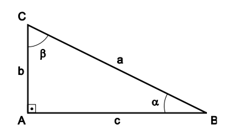
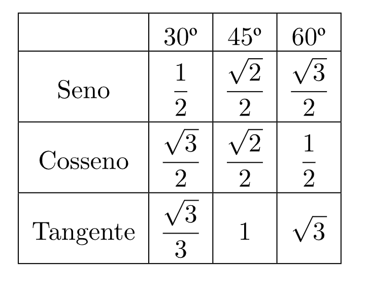
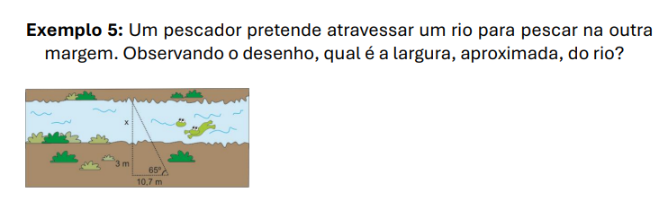
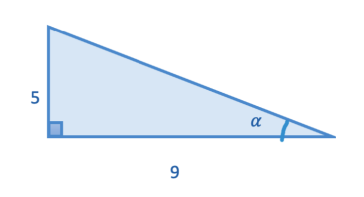
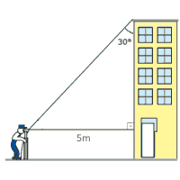

Seno, Cosseno e Tangente
Para começar, temos o triângulo retângulo, que tem um ângulo igual a 90o:
 Fonte: Arquivo da professoraE temos também o teorema de pitágoras, que será bem útil:
a2 = b2 + c2. A soma dos quadrados dos catetos é igual a hipotenusa.
E, o conteúdo principal:
Seno: CO / h
Cosseno: CA / h
Tangente: CO / CA
CO = Cateto OPOSTO ao ângulo na qual está sendo usado para procurar o seno, cosseno ou tangente.
CA = Cateto ADJACENTE ao ângulo na qual está sendo usado para procurar o seno, cosseno ou tangente.
h = Hipotenusa do triângulo
Há, também uma tabela com o seno, cosseno e tangente dos ângulos mais usados:
 Fonte: GeogebraE sabendo de tudo isso, podemos resolver exercícios:
 Fonte: Arquivo da professoraAqui, queremos encontrar o valor do x, e para isso, podemos usar a tangente, que usa CO e CA.
tg65 = (x + 3 (CO)) / (10,7 (CA))
x = 10,7 * tg65 - 3
x = 10,7 * 2.14 - 3
x = 22.8 - 3
x = 19.8
Então temos que, a largura do rio é de aproximadamente 19,8 metros.
Algo importante é que, para a maioria dos problemas que envolvem trigonometria, precisamos usar uma calculadora, para achar o valor da tangente a partir do ângulo.
Algo também muito útil é o inverso de tangente, a gente procura o ângulo através do valor da tangente:
 Fonte: Arquivo da professoraPara acharmos o ângulo α:
tan α = 5/9
α = tan-1(5/9)
α = 29,05o
Na maioria das calculadoras o inverso de tangente está como tan-1.
Teodolito
Algo que também vimos e fazemos no trimestre foi o uso do teodolito, que foi usado para fazer um trabalho para medir a altura de coisas ao redor do campus.
Era feito um triângulo com o que queria ser medido, pego o ângulo de cima e a partir disso era calculado a altura do que queria ser medido.
 Fonte: Imagem editada de https://exerciciosweb.com.br/matematica/trigonometria-no-triangulo-retangulo-atividades/Como visto na imagem, a pessoa media, a partir do teodolito, o ângulo de cima, e a partir disso, era calculado a altura do prédio.
Supondo que a pessoa tenha 1,70:
tg 30 = 5 / x
0.57 = 5 / x
x = 5 / 0.57
x = 8,77 metros
Adicionando a altura da pessoa: 8,77 + 1,70 = 10,47
Então, a altura do prédio de aproximadamente 10,47 metros.